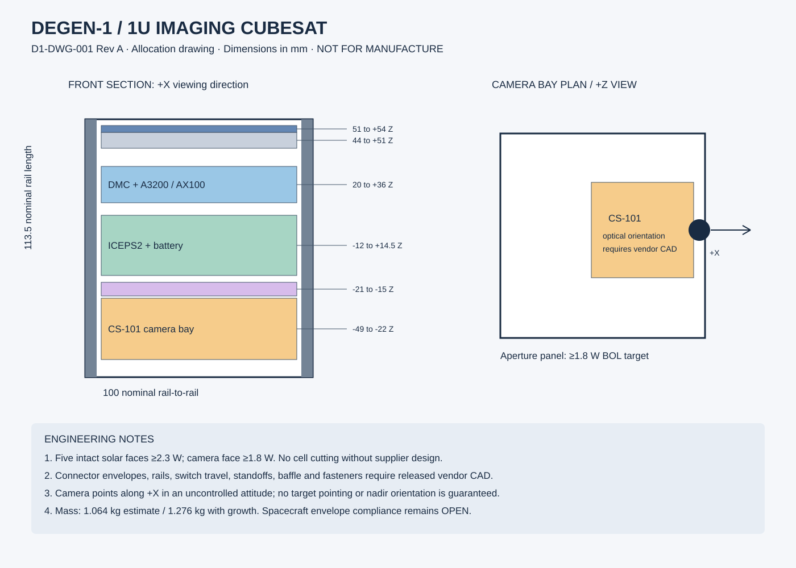

Small spacecraft.
Explicit engineering evidence.
Occasional recognizable Earth images · US operator · 12-month target · COTS-first architecture
Read the budget assumptions and open-item register before relying on performance figures. No supplier quote or physical verification is represented as complete.
Spacecraft allocation

OpenSCAD envelope model · Hardware BOM · Separated program costs · Model inputs · Recalculation script · Results
DEGEN-1
1U CubeSat preliminary engineering design — Revision A
Issued 14 September 2026. Status: AUDITABLE PRELIMINARY DESIGN / NOT RELEASED FOR FABRICATION OR FLIGHT.
The design targets one year of opportunistic imaging and housekeeping telemetry in LEO at low build cost using commercially marketed CubeSat subsystems. The owner selected occasional recognizable Earth images, US operation and nominal 450–500 km LEO, with no arbitrary spacecraft budget ceiling. A CrystalSpace CS-101 camera supports opportunistic imaging without precision pointing. Selected-location imaging or mapping would require a revised baseline.
The baseline uses an ISISPACE 1U chassis, six fixed solar panels, ICEPS2 Type A battery/EPS, AntS UHF antenna, and GomSpace A3200/AX100-U avionics on a DMC-3 carrier. One small custom adapter is required to resolve supply-voltage tolerance and inter-vendor routing. No propulsion, reaction wheels, GNSS receiver or deployable solar arrays are included.
Planning results: 1.064 kg current best estimate, 1.276 kg including 20% growth; EUR46,500 base flight-hardware allowance (EUR29,350–70,100 range). These are engineering estimates, not supplier quotations. Spacecraft build, including engineering/prototype hardware, assembly and nonrecurring engineering labor, is EUR152,500 base before contingency. Testing, ground station, licensing, launch and operations are separate categories. The cost report explains inclusions and uncertainty.
The reproducible model closes nominal energy at +18.4% with a tumble-average assumption, and a separate fixed-attitude recovery mode closes at +0.124 Wh/orbit. The nominal mode does not close in the fixed-attitude case. Thermal, orbit-lifetime, radiation, inhibit independence and final mechanical/interface compliance remain open. No analysis in this package demonstrates that the assembled spacecraft has survived launch or will actually operate for twelve months.
Audit reading order
- Mission and architecture
- System budgets and analysis rationale
- Interfaces and adapter specification
- Mechanical and environmental design
- Flight software and mission operations
- Assembly, integration and verification
- Cost and procurement trade
- Open issues and review gates
- Imaging payload and US compliance plan
- Requirements traceability, FMEA, sources
Reproduction and configuration
Run python analysis/recalculate.py using Python 3 (standard library only). Edit analysis/inputs.json for assumptions and procurement/BOM.csv for estimates. Outputs are results.json, power_sensitivity.csv and thermal_screen.csv. Assertions check model consistency and selected preliminary budget limits; they do not verify flight hardware. The HTML audit book is a generated, readable snapshot of the Markdown documents. The individual Markdown documents and model inputs are authoritative within this package.
The drawing SVG is a dimensioned allocation sketch, not manufacturing CAD. The electrical diagrams specify functional interfaces, not a released pin-to-pin harness. No STEP models, PCB fabrication files, vendor proprietary ICDs, supplier quotes, hardware test reports or flight software implementation are represented as complete.
All external facts carry source IDs resolved in the source register. V denotes vendor-stated information; A denotes an engineering assumption/allocation; C denotes a calculation; OPEN denotes missing evidence. Published product changes supersede older brochures. Engineering approval signatures remain blank; AI authorship is not an engineering release.
D1-SYS-001 — Mission and architecture
Revision A | 2026-09-14 | Preliminary
Mission definition
Demonstrate low-cost opportunistic Earth imaging and spacecraft health monitoring for 365.25 days after separation. Image requirement: return at least one recognizable Earth image during commissioning and target one useful image per month thereafter, including the final mission month. This image cadence is an allocated target, not a demonstrated coverage result. Success is at least one authenticated command and one valid health dataset during each rolling seven-day interval after commissioning, including an interval at mission day 365. The weekly criterion accommodates outages; it is not a promise of continuous ground coverage. Nominal target: daily telemetry retrieval. Minimum useful dataset: battery voltage/current/temperature, solar input power, resets, mode, uptime and radio temperature. Inertial data use sensors already on the OBC and are secondary.
Assume a US private operator, a single spacecraft and no commercial communications service. US operation and low build cost are owner requirements. Noncommercial demonstration is the provisional operating model; radio-service eligibility is not yet determined. Planning orbit: circular 475 km, inclination 51.6 degrees; trade range 450–500 km. Epoch, inclination, RAAN, injection dispersions, ground location and launch provider remain unselected. Higher-inclination rideshares require new radiation, thermal, contact and lifetime analyses. Do not buy an RF variant before the radio-service decision.
Functional operation for a year and remaining in orbit for a year are separate requirements. A lower orbit may decay too early; a higher orbit may not dispose quickly enough. No propulsion is provided. The launch orbit must pass both gates using appropriate atmospheric uncertainty cases.
Architecture and cost choices
The expensive items are purchased flight-oriented subsystems whose testing/documentation can reduce development effort. Ordinary commercial components are confined mainly to the interconnect/regulator adapter and ground support. A catalog product's heritage is evidence to investigate, not proof of the delivered revision's qualification.
Six photovoltaic faces remove the geometric zero-power orientation of a five-face design. Opposite faces feed three MPPT inputs through vendor-approved isolation, one axis per input. Two cells in series on each face give a nominal planning MPP voltage around 5.4 V [S04]; no opposite faces are placed in series. Cold open-circuit voltage, hot MPP voltage, shadowing and startup behavior require vendor curves. Five faces use a 2.3 W allocation; the +X camera-aperture face uses 1.8 W. The 2.3 W/face allocation is conservative relative to two current catalog cells but remains an RFQ acceptance target [S22].
The integrated two-cell battery simplifies packaging and handling. The CPU and radio share a commercial carrier but have separate switched, regulated power branches. The radio uses CAN/CSP to the OBC; EPS and antenna commands use I2C, with branch isolation. Debug connectors cannot back-power the bus during flight integration.
A 5 V AntS variant provides a deployment interface independently switched from avionics. It carries the +Z panel using the supported accommodation [S05]. A UHF turnstile is selected for broad coverage; actual pattern nulls remain. It is tuned on the assembled spacecraft. Body attitude is uncontrolled. A side-looking CrystalSpace CS-101 camera takes bursts when energy allows; the camera is disabled in recovery. No requirement relies on passive magnetic alignment, spin-axis control or a claimed detumble time. The OBC gyro characterizes rotation; excessive rotation or poor generation reduces operations.
Functional block diagram
+/-X panels -- isolated parallel -- MPPT X --+
+/-Y panels -- isolated parallel -- MPPT Y --+-- ICEPS2 rail / battery / safety inhibits
+/-Z panels -- isolated parallel -- MPPT Z --+ |
+-----------------------------------+-------------------+
| | |
switched 5V A switched 5V B switched 5V C
| | |
D1-IF regulator A D1-IF regulator B AntS controller
| | |
A3200 3.3V <--------- CAN/CSP ------> AX100-U 3.3V --RF--> turnstile
|
isolated I2C branches --------> EPS housekeeping / AntS control
|
temperature / health / gyro telemetry
Operational phases
Ground storage → integrated inhibited state → separation detection → delayed commissioning → antenna release → receive/beacon acquisition → health operations → recovery as necessary → end-of-mission passivation. Commanded RF silence must persist across watchdog resets. Lost ground contact cannot cause unrestricted high-duty transmission. A battery exhausted below the restart threshold must be able to recover from solar power without OBC intervention.
The three-inhibit provision and RBF are a supplier/launch-interface configuration requirement. A single software switch or a timer is not substituted for independent barriers. The EPS optional switch architecture is evaluated at system level with all solar and debug paths included [S03]. The design has no pyrotechnic devices, pressure vessels or propulsion. No new orbital debris is intentionally released.
Alternative selection rule
RFQ the component baseline and a basic EXA KRATOS or Alen 1U platform simultaneously. Prefer the offer with the lowest total delivered, integrated, verified cost that meets the requirements. The present evidence supports a cost-conscious candidate, not a mathematically proven global minimum. A turnkey quote can win even if its hardware line is higher: reduced adapter design, software integration and retest effort can dominate the difference. No order or supplier message was sent.
D1-ANA-001 — Budgets and analytic screening
Revision A | All numbers below are preliminary; inputs are explicitly editable.
Mass and volume
The BOM sums to 1063.5 g (C). Uniform 20% growth gives 1276.2 g. A conservative project mass ceiling of 1330 g leaves 53.8 g after growth. This is a project target, not a statement that all modern 1U dispensers impose 1330 g. The selected deployer sets the final limit [S01].
The 300 g panel allocation includes six panels. AntS uses a conservative 90 g allocation, not a legacy 18 g figure. EPS mass includes its battery. Harness, thermal materials and adapter have separate allowances. The camera and its bracket are included. No extra battery, deployer, ballast or ground equipment is hidden in the mass total. Mass must be measured after each integration step and reconciled against the assembly BOM.
Internal Z allocation, centered coordinates in mm: camera bay -49 to -22, with lens along +X; adapter -21 to -15; EPS/battery -12 to +14.5; carrier and its two top-side modules +20 to +36; upper service clearance +36 to +44; AntS +44 to +51; top panel provision +51 to +54. Approximate outside rail span is 100 x 100 x 113.5 mm. These intervals leave internal clearance but do not establish X/Y fit, fastener access, connector bend radii or actual mating heights. The vendor CAD and dispenser drawing are mandatory before release.
With EPS at z=+1.25, avionics at z=+28, AntS at z=+47.5, adapter at z=-18 and the 70 g camera/bracket at z=-35.5, the illustrative center of mass is z=+3.8 mm when other masses are symmetric. A camera center at x=+25 mm shifts total x center of mass approximately +1.65 mm. This is not a verified mass-properties result. Require measured center of mass within a project target of +/-10 mm on all axes. Record measured inertia for separation and RF/thermal attitude modeling.
Orbit and eclipse
Two-body circular period: T=2*pi*sqrt((Re+h)^3/mu). Zero-beta maximum cylindrical-shadow duration: Te=T/pi*asin(Re/(Re+h)). At 475 km this gives T=94.101 min, eclipse=35.833 min, sunlight=58.268 min, approximately 5589 orbits/year. Penumbra, oblateness, beta evolution and altitude decay are omitted. Adopt 38 min for environmental test eclipse segments to cover analysis uncertainty; re-evaluate at the minimum mission altitude.
Solar generation
For equal panels on all six orthogonal faces, geometric power is Pface*(abs(sx)+abs(sy)+abs(sz)). For a unit Sun vector the sum ranges from 1 to sqrt(3); an isotropic attitude average is 1.5. This proves a geometric lower bound only for intact, equally capable, unobstructed faces. One failed face destroys that bound. No isotropic tumble guarantee is assumed for survival. With five 2.3 W faces and a 1.8 W camera face, the isotropic mean is (5*2.3+1.8)/4=3.325 W BOL, and the geometric minimum is 1.8 W. These replace the equal-face geometry in the released model.
Apply separate allocations: end-of-life factor 0.85; temperature factor 0.90; shadow/assembly factor 0.90; MPPT/harness efficiency 0.90. Thus EOL power during sunlight is 1.115 W for the camera-face lower bound and 2.060 W for the unequal-face isotropic mean. These factors require radiation/thermal/IV verification. Albedo generation is ignored. Distribution efficiency is separately 0.85, including the adapter, and battery charging efficiency is 0.90. Efficiencies are not measured vendor claims.
Load allocation at delivered load rails
| Load | Nominal allocation | Recovery allocation | Evidence |
|---|---|---|---|
| OBC | 0.18 W | 0.08 W | A; clock/sleep schedule to demonstrate |
| EPS housekeeping/internal overhead | 0.14 W | 0.12 W | A; includes published 93 mW PDU idle, not just that figure |
| Interfaces/carrier/sensors | 0.03 W | 0.02 W | A; USB off |
| Radio RX | 0.20 W continuous | 0.396 W for 20% of time | A nominal; recovery budgets datasheet max current |
| Radio TX | 3.3 W for 2% of orbit | 3.3 W for 0.5% | S10 maximum temperature current used; replace RX while TX nominally |
| Camera | 0.02 W average, 2 W peak | OFF | A; capped daily powered time |
| Heater | 0.10 W average | 0.10 W average | A; 1 W at 10% duty equivalent |
Add 20% load growth. Nominal total=0.8784 W. Recovery total=0.49884 W; recovery calculation conservatively adds TX energy without subtracting RX overlap. The onboard heater may have different instantaneous wattage: the 1 W value is an allocation requiring configuration or modulation confirmation.
Energy accounting: Erequired = Pload/eta_distribution * (Tsun + Teclipse/eta_charge)/3600. This handles eclipse recharge explicitly. Nominal required solar energy is 1.689 Wh/orbit versus 2.001 Wh available: +0.312 Wh, or +18.4% of required energy. Fixed-attitude nominal deficit is 0.606 Wh/orbit. Recovery needs 0.959 Wh versus 1.083 Wh available: +0.124 Wh. This separation is essential: six faces do not justify permanent full-power operation.
Recovery RX duty is 12 s per minute; the radio must wake and receive within the allocated window. Ground commands repeat across at least one full window cycle. Firmware transitions to recovery when generation and state-of-charge trends are inadequate, regardless of perceived attitude. Nominal heating can average at most about 0.235 W before consuming all model energy reserve. Preserve growth reserve in operations rather than deliberately operating at that bound. The sensitivity CSV includes poor generation and high heater cases, some of which fail. A thermal solution demanding sustained high heater power requires redesign.
Peak bus load allocation: OBC 0.9 W, radio 3.3 W, EPS/interface 0.17 W and heater 1 W, with 20% growth, gives 6.444 W delivered. At 85% conversion this is 7.58 W battery-side, approximately 1.26 A at 6 V. Verify actual per-channel current limits, wiring drops, transients and startup. Do not deploy the antenna while transmitting; a separate 2 W deployment allocation applies.
Battery and lifetime
Use 22.5 Wh BOL, derated to 18 Wh at EOL (80%, A). A routine 20% depth-of-discharge design limit permits 3.6 Wh. Routine eclipse discharge is approximately 0.617 Wh, or 3.43% EOL DOD. A stress eclipse with 120 s TX and continuous 1 W heating, with imaging disabled uses 1.453 Wh, or 8.07%. Neither calculation proves a calendar or cycle lifetime. Require evidence for at least 6000 shallow cycles plus ground storage at actual temperature, charge voltage and current.
Voltage cannot be treated as a precise SOC measurement under load. Use calibrated coulomb counting with voltage/temperature correction; trend errors and periodically reconcile during appropriate rest conditions. Reserve energy for antenna release and initial acquisition; do not spend the full DOD allowance in routine operations.
Radio link
Planning carrier 437 MHz is a calculation placeholder, not a frequency assignment. Use 1200 bit/s Mode 5/Golay framing; no coding gain is credited. Current AX100 deliveries support only Mode 5 per S11. The receiver threshold of -123 dBm is a procurement/bench-test requirement for the complete modem at packet error rate <=1% with the selected packet length and configuration, not the -137 dBm/100 bit/s marketing figure.
At 10 degrees elevation, circular geometry gives 1633.16 km slant range. FSPL=32.44+20log10(f_MHz)+20log10(d_km)=149.51 dB.
| Term | Downlink | Uplink |
|---|---|---|
| Transmitter at connector | 29 dBm | 30 dBm |
| Ground antenna gain | +16 dBi | +16 dBi |
| Space antenna reference gain | 0 dBi | 0 dBi |
| Space feed loss | -1 dB | -1 dB |
| Ground feed loss | -1 dB | -1 dB |
| Propagation allowance | -1 dB | -1 dB |
| Polarization allowance | -3 dB | -3 dB |
| Tumble/pattern allowance | -6 dB | -6 dB |
| Free-space loss | -149.51 dB | -149.51 dB |
| Received power | -116.51 dBm | -115.51 dBm |
| Margin over -123 dBm threshold | 6.49 dB | 7.49 dB |
The 6 dB fade allowance does not bound turnstile nulls. Packet repetition, pass diversity and measured full-sphere antenna coverage are required. If measured threshold is only -120 dBm, downlink margin falls to 3.49 dB. Additional losses may require a higher elevation mask or reduced data rate. Maximum orbital-speed Doppler estimate is +/-11.1 kHz; tune with predicted Doppler and acquire residual clock drift, rather than relying solely on radio AFC.
64 bytes/min generates 92,160 bytes/day before framing. At 1200 bit/s and a conservative 50% net efficiency, 1229 s/day are needed. The 2% orbit-average TX allowance gives 1728 s/day, but contacts must supply the necessary visibility. Four 6-minute passes provide only 1440 s before fades and acquisition; they are an illustrative scenario, not a computed schedule. Store at least 30 days of health telemetry, downsample in recovery to a summary every 10 minutes, and never increase duty merely to empty a backlog. Exact contact coverage awaits the ground location and orbit.
D1-ICD-001 — Preliminary interface control specification
Revision A | Functional allocation. Pin-to-pin harness release is OPEN.
Compatibility findings
An electrical PC/104-style stack is not automatically pin compatible between manufacturers. Do not mate the EPS and carrier through unreviewed stackthrough contacts. Prefer separate manufacturer-approved power/data harnesses into D1-IF; mechanically stack boards with only approved connectors and standoffs. A complete populated-contact map is required even for nominally unused pins.
S03 gives EPS 3.3 V output up to 3.41 V unloaded. The OBC's normal supply range ends at 3.4 V [S08], and the radio has a 3.4 V absolute maximum [S10]. Direct connection is not accepted. D1-IF uses two independently supplied 5 V to 3.3 V conversion branches, one each for OBC and radio. Keep the radio's data pins high impedance while unpowered. Separate the EPS/AntS I2C branches from the radio CAN path so one stuck device does not jam all recovery control.
Logical connection schedule
| ID | From / to | Interface and design allocation | Closure requirement |
|---|---|---|---|
| H01–H03 | +/-X, +/-Y, +/-Z panels → EPS MPPT1–3 | Per-face two-series-cell strings, opposite faces parallel through blocking paths | Signed hot/cold IV and reverse-current topology; no series connection between opposite faces |
| H04 | EPS switched 5 V A → D1-IF A → DMC OBC supply | 3.30 V nominal; 1 A branch design allocation | Test at load pins including all tolerances/transients |
| H05 | EPS switched 5 V B → D1-IF B → DMC radio supply | 3.30 V nominal; 1.2 A branch design allocation | Confirm startup, output discharge and backfeed isolation |
| H06 | EPS switched 5 V C → AntS 5 V variant | 2 W deployment allocation; no simultaneous TX | Independent hazard inhibits and pin map |
| H07 | A3200 ↔ AX100 | CAN/CSP, initially 125 kbit/s, two endpoint terminations | Carrier routing and firmware support; about 60 ohm unpowered bus resistance |
| H08 | A3200 ↔ ICEPS2 | 3.3 V I2C, 100 kbit/s, OBC master | Supplier command protocol, address, clock stretching, pullups |
| H09 | A3200 ↔ AntS | Separate isolated I2C branch | Address conflict check and unpowered pin behavior |
| H10 | AX100 RF → AntS | 50 ohm coax, right-angle MCX at radio | AntS connector selection; <=1 dB full harness loss |
| H11 | Three separation switches + RBF → EPS | Hardware inhibit inputs/paths | Exact wiring, independence, source isolation and switch travel |
| H13 | Switched payload rail → CS-101 / serial → OBC | 2 W peak camera allocation; UART or RS485 by supplier option | Camera voltage, logic levels, protocol and timeout OPEN; do not assume direct 5 V compatibility |
| H12 | Ground service → test interfaces | Current-limited, removable and keyed | No dual supplies or electrical bypass during delivery |
Connector names H01–H12 are Degen-1 harness IDs, not manufacturer connector identifiers. Freeze supplier part numbers, mating halves, cavities, contact gender, wire gauges, shields, lengths, tolerances and approved torque values in the final harness drawing. No arbitrary vendor pin numbers have been invented.
D1-IF regulator adapter concept
Two TI TPSM82823-based channels are candidates [S14], each supplied by its corresponding EPS 5 V output. Use the adjustable configuration with 450 kohm top and 100 kohm bottom 0.1% resistors for 3.3 V nominal from the 0.6 V reference. Initial capacitor allocations: 10 uF input and 22 uF output, X7R, rated >=10 V; effective capacitance and stable layout must satisfy the selected datasheet circuit. Place local bulk/decoupling at each module's supply and use the manufacturer's layout guidance. These are design starting values, not a released schematic/BOM.
Reference tolerance +/-1%, resistor ratio tolerance, bias current, temperature, radiation drift, DC line drop and dynamic overshoot must be combined. A preliminary DC tolerance allocation of +/-1.2% gives about 3.260–3.340 V before dynamic effects. Allocate no more than 40 mV additional positive excursion at the radio pins, retaining at least 20 mV to the absolute maximum. The radio datasheet does not provide a clear guaranteed normal supply tolerance around 3.3 V; obtain written acceptance of the complete supply envelope. A bench measurement on one room-temperature unit is insufficient.
Provide independent enable control from EPS branches, output discharge, power-good telemetry, and signal isolation to stop parasitic powering. Use reset supervision referenced to the delivered OBC rail, not a remote EPS measurement. The regulator's own PG upper threshold is not an adequate radio overvoltage protector. Analyze switch short and feedback-open faults; an upstream EPS current limiter may not prevent downstream overvoltage. The open interface action must select an accepted protective topology or obtain a qualified tightly regulated supplier solution. Ordinary catalog regulator radiation behavior is a major residual risk.
No adapter Gerbers or manufacturing files are released. At procurement review compare this adapter's total engineering/qualification expense with a guaranteed compatible EPS output option or integrated bus. Remove the adapter only after the alternative's limits close over environment and aging.
Safety inhibit allocation
Adopt three independent physical barriers for RF energy and for antenna release until the launch provider approves a different arrangement [S01]. Request the ICEPS2 three-separation-switch/RBF option. Its detailed topology must be assessed from source (battery, every solar path, test port) to hazard. Three switches controlling one common unprotected device are not automatically three independent inhibits. Shared grounds, body diodes, charging paths and data-pin backfeed must be considered [S03].
BATTERY / SOLAR / TEST SOURCES
| vendor-controlled source isolation network
Inhibit A --- Inhibit B --- Inhibit C --- hazard supply --- TX or release driver
^ ^ ^
separate physical switch actuation / independent control as demonstrated
RBF overrides the integrated ground configuration to OFF.
Timers authorize later actions; they are not counted as physical inhibits.
This is a required functional topology, not a claim that the selected EPS already implements exactly this series circuit. Supplier evidence may implement an equivalent accepted network. In the inhibit verification fixture, exercise all eight switch states with solar power present and absent, battery present, and authorized service configurations. Inject each single failed barrier and prove the remaining barriers prevent the hazard. Record rail voltages, maximum RF leakage and release current against launch-approved limits. Battery protection exceptions need explicit ICD acceptance.
Timing and safe defaults
Use at least 30 min delay before any deployable release and at least 45 min before RF after valid separation [S01]; apply any longer launch requirement. Software and hardware default to RF and release disabled. A reset during initial delay conservatively restarts the delay unless independently verified retained timing proves elapsed time. Switch bounce or reassertion resets the separation-valid state. Persist a command inhibit across reboot. Antenna release requires valid separation, elapsed delay, sufficient energy, allowed temperature and an authenticated command or preapproved autonomous commissioning sequence.
Grounding and EMI
Select one intentional DC reference bond to chassis; route power returns with supply wires. Establish conductive structure bonds independently of anodized rail contact. Separate MPPT/regulator and heater current loops from radio feed and sensor wiring. Document shield termination and signal return paths. Test receiver sensitivity with EPS converters active, radio powered, maximum CPU workload and heater switching. No blanket claim of EMC compliance is made from component assembly grades.
D1-ENV-001 — Mechanical and environmental design
Revision A | Analysis plans plus explicit screening; qualification remains open.
Structure and launch survival
Purchase a metal 1U flight structure and its intended rail, fastener and board-mounting system. Retain supplier materials, surface treatments and joint geometry. Flight harnesses require strain relief and positive retention. No friction-fit hobby headers, loose SD cards, consumer battery holders, adhesive-only heavy components or unapproved rework are accepted. Approved locking methods and workmanship instructions must be selected with the assembly contractor.
Rails carry dispenser interface loads into frames; board standoffs carry PCB mass into frames. Battery support must use the supplied retention system. Verify cell restraint independent of electrical terminals. Solar substrates transfer loads through approved attachment points. Antenna elements must be restrained by spacecraft hardware in the stowed state; the dispenser is not the antenna hold-down mechanism.
The rail drawing is governed by the selected dispenser ICD and CDS [S01]. Require supplier drawings, material certificates, fastener specifications, installation sequence, vent paths, mass properties and actual flight configuration CAD. Check access and serviceability with the panels and antennas installed. Outgassing evidence is required for adhesives, coatings, wire insulation and polymer components; inspect venting of every enclosed volume. Prefer already characterized material systems and minimize late finish changes.
Preliminary load screen
For scale only, assume a 20 g quasi-static limit acceleration (A; not a launch requirement). The 1.2762 kg design mass produces 250.3 N. Uniform division over four rails is 62.6 N/rail, but real restraint preload and dynamic load sharing may be highly unequal. An EPS mass of 184 g produces 36.1 N, and with an assumed 25 mm lever arm about 0.90 N m. These are input loads, not strength margins. Use the launch coupled-loads envelope for final analysis.
Require a structural finite-element model including joint stiffness, dispenser boundary conditions, battery and daughterboard retention, panel supports, harness masses and material allowables. Extract modes, random vibration responses, stress, fastener preload/separation, buckling and fatigue where applicable. Compute MS=allowable/(factor*applied)-1 using approved yield/ultimate factors and documented allowables. No positive structural margin or first-mode frequency is claimed without this model. A convenient 100 Hz target may guide early stiffness but is not adopted as a universal acceptance criterion.
Qualification/acceptance profiles must be agreed with the integrator. GEVS B [S15] is a tailoring reference; do not expose hardware to an arbitrary generic gRMS value. Shaker-fixture dynamics, notching, force limits and battery state matter. Components with heritage still require final assembly workmanship/acceptance testing. Current EPS and AntS webpages do not identify individual shipped-unit vibration/shock testing [S02,S05].
Thermal architecture
Six dark solar faces offer limited radiator area. Put the battery toward the interior, provide a characterized conductive route to the structure, and use controlled isolation to prevent excessive cold coupling. Retain EPS heater sensing and add independent overtemperature protection if the provided architecture lacks the required failure protection. Place radio heat spreading to the frame; avoid coupling peak radio heat directly into the battery. Use qualified optical films only on available non-cell areas and preserve antenna/rail interfaces.
Project targets: battery +5 to +35 C during normal operation; charge only from +5 to +40 C at <=0.8 A until the vendor approves a different profile; inhibit charging below +5 C or above +40 C. Nonbattery electronics target -10 to +50 C. Deploy the antenna only from +5 to +45 C, providing margin inside the current published deployment range [S05]. These targets are allocations, not predicted temperatures. S03 distinguishes battery charge, limited-current charge and discharge ranges; the broader EPS marketing operating range is not permission to charge at subzero temperature.
Executed screening
thermal_screen.csv uses a single isothermal node with radiating area 0.06 m2, effective Earth-view area 0.02 m2, and assumed projected areas 0.01–0.01732 m2. Solar flux 1322–1414 W/m2, albedo 0.20–0.35 and IR 200–260 W/m2 are illustrative bounding inputs. Optical absorptivity/emissivity are assumed, not measured. Electric power extraction is subtracted from absorbed solar heat, with internally dissipated power then added.
The equilibrium estimates are approximately -18 C for the cold sunlight case, +19 C nominal sunlight, +50 C hot sunlight and -78 C eclipse equilibrium. Eclipse equilibrium is not an actual 36-minute eclipse temperature; thermal inertia is absent. These results demonstrate that passive survival/charging is not closed by the current screen. They must not be used as hardware qualification predictions.
Thermal closure method
Build at least a battery, avionics, structure and six-panel node network. Each node obeys C_i*dT_i/dt = Q_i + sum(G_ij*(T_j-T_i)) + radiation_exchange_i. Include battery internal resistance versus SOC/temperature, heater PWM, power conversion losses, operational modes, shadow transitions, cell extraction, varying beta and optical properties at end of life. Run cold startup after launch storage, long eclipse, repeated low-generation recovery, hot continuous-sun and high-beta cases, and heater-stuck-on/off cases. Model actual thermal conductances and uncertainties; correlate using thermal-balance testing and measured time constants.
Close the heater budget jointly with energy. The assumed 0.10 W orbit-average heater load is restrictive. If the model needs more than the available energy reserve, change thermal paths/optical surfaces or reduce operations; do not merely increase battery capacity. A larger battery does not fix a persistent negative orbit-energy balance. A 1 W heater stuck on threatens both energy and temperature and must have a bounded shutoff path.
Radiation and other LEO exposure
Create an orbit/epoch-specific radiation environment and shielding sector model before making a twelve-month reliability claim. Run trapped particle and solar/proton/heavy-ion cases using an appropriate validated environment tool and retain all inputs/model versions. Assess total ionizing dose at the CPU, memory, EPS controller, switches, radio and adapter regulators, plus displacement damage to solar cells. Apply a preliminary radiation design margin factor 2 to the calculated mission dose when evaluating test evidence. This factor is a project allocation, not a universal standard.
Obtain part-level or assembly-relevant dose/SEE evidence tied to delivered lot/revision. Destructive latchup and power MOSFET failure cannot be fixed by a watchdog; power limiting is useful only if its response prevents damage. Memory upset recovery uses CRC, independent boot images and persistent counters, but does not provide quantified mission reliability. No arbitrary aluminum thickness is presented as sufficient shielding. NASA guidance emphasizes the application-specific nature of SEE assurance [S17].
Assess atomic oxygen/UV damage to exposed polymers, cell coverglass and adhesive edges; spacecraft charging and electrical bonding; vacuum effects on heat transfer and lubricant; and micrometeoroid/debris risk. Preserve material certificates and test evidence. This design accepts single-string critical hardware to control cost, so single-point failures remain. No numeric probability of one-year survival is claimed.
Orbit lifetime and disposal
Use the as-built mass and projected drag area distribution, including deployed antenna influence, to propagate atmospheric decay. A rough nominal ballistic coefficient with m=1.0635 kg, Cd=2.2 and mean area=0.015 m2 is 32.2 kg/m2; plausible areas 0.01–0.01732 m2 give approximately 48.3–27.9 kg/m2. This is not a lifetime prediction.
Run launch dispersions, earliest/latest epochs, attitude cases, solar minimum and high-activity density cases. High drag must retain orbit for the operational year; low drag must meet post-mission disposal timing. Apply the applicable FCC requirements [S16] and integrator criteria, with reentry casualty/demise and collision analyses. NASA's deorbit overview [S18] supports treating this as an explicit design trade. A 475 km starting altitude is only a candidate. If no interval closes, change launch orbit or add a disposal device and re-open size, mass, cost, hazards and reliability. Do not promise passive deorbit solely from altitude.
D1-SW-001 — Flight software and operations specification
Revision A | Software requirements; not executable flight code.
Runtime architecture
Use the vendor-supported A3200 BSP/RTOS and tested CSP library version. Obtain commercial software license/support terms in the hardware RFQ. Avoid Linux, SD-card root filesystems and unnecessary networking services. Separate time-critical health/recovery tasks from camera capture/compression. Use bounded allocation, queue sizes and CPU time. Camera, radio or I2C timeout cannot block a system-health task.
Boot ROM/internal boot path validates a protected known-good image and a candidate image. Stage updates atomically, verify integrity/authenticity, limit boot attempts and roll back. Confirm that the physical memory map and vendor bootloader support this architecture; it is not assumed from NOR capacity alone. Store configuration in CRC-protected redundant records with monotonic generation counters. Critical RF-disable and mission-end flags survive reset. Memory scrubbing/checksums detect corruption, but no claim of hardware ECC is made.
Allocate watchdog servicing from a health aggregator that requires progress from all critical tasks. Initial timing targets: health sample 10 s, scheduler 1 s, watchdog heartbeat 5 s and external recovery timeout <=60 s; confirm supported EPS/OBC ranges. After three consecutive unsuccessful boots enter the minimal recovery image. EPS supervisor must restore an unresponsive OBC autonomously without depending on the OBC command bus.
State transitions
| State | Entry / allowed activity | Exit |
|---|---|---|
| INHIBITED | Ground/launch configuration; hazards physically isolated | Valid all-switch separation |
| DELAY | OBC health only; camera and RF off | Valid elapsed release/RF timing |
| DEPLOY | Sufficient battery energy, permitted temperature; bounded release sequence | Telemetry confirms release or retries exhausted |
| COMMISSION | Low duty beacon and command acquisition; no images until authorized and stable | Health and link checkout approved |
| NOMINAL | Duty-budgeted health, image bursts, selective file transfer | Energy/thermal/link fault or end of mission |
| RECOVERY | Camera off; RX 12 s/min; TX <=0.5%; minimal OBC | Sustained energy surplus and thermal conditions |
| RF SILENT | Persistent command or license condition | Authorized explicit release, unless mission end |
| PASSIVATED | Mission end; suppress images/RF; safe energy management | No routine return to service |
Initial SOC thresholds (A): enter recovery below 50%, resume nominal above 70% after two positive-energy orbits, block imaging below 75%, and reserve vendor-safe voltage floor regardless of estimated SOC. Low voltage, temperature or abnormal current can independently force recovery. Validate thresholds with real battery curves and monitor sensor failures. If SOC is invalid, default to the conservative voltage/temperature recovery policy. No setpoint may override battery protection.
Command and telemetry
Commands: request health; set allowed operating mode; disable RF; request thumbnail/file segment; adjust bounded camera exposure; update approved schedule; reset camera/radio; upload staged firmware; initiate approved passivation. Hazardous commands require authenticated authorization, replay protection and two-step arm/execute with timeout. Design the link/security format around the selected license. Authentication does not imply permission to encrypt traffic in an amateur service.
Each telemetry record contains protocol version, spacecraft ID, sequence, reset counter, timestamp/time validity, mode, battery/solar/rail values, temperatures, deployment status and fault flags. Packets have integrity checks and bounded lengths. Image transfers use image ID, segment index, total segments, per-segment CRC and final file hash; retransmit missing segments only. Retain health packets at highest priority.
AX100 framing is Mode 5 per S11. Confirm supported forward-error options and ground firmware; no legacy AX.25/Viterbi dependency is permitted. Have an independent RF watchdog or EPS-timed radio cutoff to bound unintended TX; verify available hardware behavior. If unavailable, log as a failure-mode gap rather than relying on the main task scheduler.
Ground segment
Cost baseline: one AX100 ground modem to match flight framing, a suitable carrier/EGSE interface, PC, M2 436CP42UG circular antenna, azimuth/elevation rotator/controller, low-loss coax, bandpass/filtering and surge/weather protection [S28,S29]. The antenna is large (about 5.7 m boom); verify site and mount feasibility. Budget 16 dBi installed antenna gain and <=1 dB receive feed loss, using near-antenna modem placement or an appropriate calibrated front end. Do not assume long unamplified coax meets that loss.
Use 1 W ground RF power only if authorized EIRP, emission and site limits permit. 30 dBm +16 dBi -1 dB feed is a 45 dBm EIRP planning value, not an authorization. Ground model quotes must include two-way operation and the exact Mode 5 waveform. A second ground modem can serve as a development asset; do not count the same radio twice in procurement.
Daily workflow: refresh orbital elements; evaluate pass geometry; check hardware/time synchronization; predict Doppler; receive health before commanding; obey energy flags; request high-priority images; archive raw packets and metadata; reconcile SOC/thermal/reset trends; review conjunction notices. No commanding based solely on unattended image-processing output. Design for remote shutdown and keep an offline command-key backup.
LEOP reserves multiple days for acquisition and catalog identification. Use deployer separation predictions and transmitted unique ID; do not rely on a definitive public orbital element set immediately after launch. Partner ground sites are options subject to agreements and spectrum authority; crowdsourced reception is not guaranteed coverage.
At day 365, confirm mission success evidence then execute authorized end-of-mission operations. Passivation requires supplier-confirmed control of charge sources and stored battery energy; merely turning the OBC off is not passivation. Any residual autonomous recharging or reboot beacon path must be eliminated or explicitly covered in the debris/safety assessment.
D1-AIV-001 — Assembly, integration and verification plan
Revision A | Planned procedures; no test has been performed on hardware.
Build sequence and records
- Freeze mission scope, RF route and candidate orbit. Obtain exact vendor revisions and controlled ICDs. Re-run all model inputs against quotes before ordering flight hardware.
- Receive and serialize hardware. Capture vendor CoC, acceptance data, firmware versions, battery shipping documentation and storage conditions. Inspect for damage and validate packing lists. Open nonconformances before accepting substitutions.
- Build an engineering flat-sat with representative EPS/OBC/radio/camera interfaces. Use a battery simulator first, then the protected engineering battery. Validate supply tolerance, inhibit paths, watchdog recovery, radio interoperability and camera file handling before flight-stack assembly.
- Qualify the D1-IF layout and mechanical details using engineering articles. Test dead shorts, feedback fault behavior, output overshoot and unpowered data pins. Close radiation evidence separately. Do not debug an unverified regulator using flight radio hardware.
- Assemble the flight structure on an ESD-controlled clean bench with approved tooling. Record fastener torque and locking method from supplier drawings; log material lot/cure records and photographs. Install EPS, adapter, avionics, camera and harnesses in the cleared sequence. Use strain relief and verified connector retention.
- Check camera focus and boresight, install solar panels, then antenna assembly. Measure power IV curves and complete an RF tune on the final assembly. Verify camera aperture, deployed antenna clearance and all rail envelopes.
- Run baseline functional, mass/property, dimensional and inhibit tests. Complete environmental testing in approved sequence, followed by repeat functional and optical/RF checks. Any rework after environmental testing receives a documented regression/retest disposition.
- Load final approved firmware/configuration, archive hashes, verify battery SOC, remove optical cap, install RBF and prepare clean shipping configuration. Perform final integrator fit check and delivery review with traceable closeout evidence.
Test matrix
| Test ID | Procedure / configuration | Acceptance evidence |
|---|---|---|
| T01 | Dimensional inspection and flight-like dispenser fit | Signed measurement report, interference-free insertion/ejection per ICD, all rail/protrusion limits |
| T02 | Mass, center of mass, inertia measurement | <=actual manifest mass; project target <=1330 g; COM target +/-10 mm; measured inertia |
| T03 | Every power branch across temperature, SOC and load steps | Approved operating voltage at device pins; no absolute maximum exceedance; stable recovery and measured efficiency |
| T04 | All eight inhibit-switch states; source permutations; single failed barriers | No RF/release hazard before allowed state; RBF and debug isolation verified to launch limits |
| T05 | Separation delay, reset/brownout/bounce and stuck-switch injection | No early RF/release; bounded retries; stable inhibited defaults |
| T06 | Solar simulator/shadow sweep, hot/cold IV and one-axis exposure | 2.3 W five faces, 1.8 W aperture face at agreed BOL conditions; cold startup and no reverse-current damage |
| T07 | Orbit power replay: >=72 hours, nominal and fixed-attitude recovery | No declining SOC trend after settling; commanded load/duty and temperatures within budget |
| T08 | Battery capacity and representative life evidence | >=18 Wh usable EOL capacity basis at specified discharge conditions; 6000-cycle mission-profile evidence plus calendar storage |
| T09 | End-to-end radio attenuation/Doppler test, EPS/heater/CPU active | <=1% PER at -123 dBm for selected packet/waveform or reclosed link; +/-11.1 kHz Doppler tracking with residual offsets |
| T10 | Full assembly antenna tuning/pattern measurement | Feed loss, return loss and gain coverage meet approved RF model; stowed and deployed characterization |
| T11 | Image capture, optical focus and smear replay | Recognizable calibrated scene at infinity; exposure, compression and bounded memory/CPU behavior |
| T12 | Random/sine vibration and shock as required, flight-like fixture | Signed tailored profile, monitored response, no damage, post-test function/optics/RF within acceptance limits |
| T13 | Thermal vacuum cycling + thermal balance, functional at plateaus | Correlated thermal model; no charge outside allowed range; no reset/leak/optical failure; heater budget closes |
| T14 | Antenna deployment at cold/hot allowed limits, vacuum where required | Every element deploys and indicates status; bounded release energy; no camera or cell interference |
| T15 | Fault campaign: stuck I2C, radio runaway, corrupt image, brownout, bad boot, lost contact | Recovery reaches defined safe state, no boot loop or uncontrolled TX; health accessible |
| T16 | Radiation evidence review and tests for uncovered parts | Environment/dose/SEE assessment and accepted margin; no unsupported critical-part survivability claim |
| T17 | Rehearsed LEOP, image request, ground loss and mission end | Operations runbooks complete; keys/backup and source passivation verified |
| T18 | Optical/EMI/functional regression after environment | Before/after data comparison within signed limits and all anomalies dispositioned |
Environment profile tailoring
Before T12/T13 define expected flight environment, qualification/protoflight/acceptance philosophy and allowed hardware pedigree. A cost-minimum approach uses one flight model with supplier design qualification evidence, representative engineering hardware for development and a tailored flight acceptance campaign. Qualification gaps cannot be silently waived to save money. Extra qualification articles belong in the cost risk.
The test readiness package specifies fixture drawings, accelerometer/thermocouple locations, calibration, command script, battery state, inhibit state, frequency/PSD/shock response levels, axis order, durations, notching/abort criteria, chamber pressure and hot/cold dwell criteria. Limits are TBD until the launch provider and analysis agree. Never use component absolute maximum ratings as test setpoints. Thermal cycling and vacuum testing are distinct evidence items; a generic vendor temperature range does not substitute for system thermal balance.
For each test record article serial number, hardware/firmware revision, operator, date, calibrated equipment, setup photos, raw time series, deviations, pass/fail against each requirement and independent reviewer. A claimed pass without raw data and configuration traceability is not a closed requirement.
Procurement and review gates
PDR: mission scope and candidate architecture; budgets with assumptions; cost trade; no hidden unknowns. CDR/fabrication release: all supplier ICDs closed, full schematics/CAD, structural/thermal/radiation analyses, orbit/regulatory route and flight software architecture accepted. Test readiness: procedures/limits/fixtures approved and hazards controlled. Flight readiness: requirements matrix closed with signed evidence, licensing and manifest approvals in hand, anomalies resolved, configuration frozen. No gate is passed by issuing this document.
D1-PAY-001 — Opportunistic Earth imaging
Revision A | Owner-confirmed scope: occasional recognizable Earth images.
Hardware and optical requirements
Select CrystalSpace CS-101 Kikas, 5 MP, with an infinity-focused visible lens [S23]. Published envelope is 42 x 25 x 45 mm and mass 50 g. Allocate 20 g for bracket, short baffle and harness. The current detailed product brief is gated behind a contact form; no form was submitted. Accordingly supply voltage, consumption, shutter type, image format, operating temperatures and serial protocol are unresolved. These must be confirmed before procurement release.
Request a roughly 60-degree horizontal field of view lens with matching sensor orientation, calibrated infinity focus, exposure control down to <=1 ms, and a JPEG or reduced-resolution output path. This FOV is an order requirement, not a claimed standard CS-101 lens. Lens acceptance includes focus and distortion through thermal vacuum, mechanical retention, solar exposure tolerance and stray-light behavior. The spacecraft has no commanded Sun avoidance; if the camera cannot tolerate incidental Sun exposure, add protection or revise the attitude architecture.
At 475 km and 60-degree horizontal FOV, the flat-ground nadir swath approximation is 2*h*tan(FOV/2)=548 km. At 640 output columns this corresponds to approximately 857 m/pixel at scene center in a nadir-like view. This is geometric sampling, not guaranteed ground resolution, optical MTF, geolocation accuracy or a targetable swath. Limb views are highly distorted. Do not infer exact full-resolution dimensions or resolution from the 5 MP label.
Pixel angular pitch at 640 columns is approximately 1.64 mrad. With a 10 degree/s rotation and <=1 ms exposure, rotational smear is about 0.11 output pixel. Orbital translation contributes roughly 7.6 m in 1 ms, well below a coarse output pixel. At 100 degree/s, rotational smear exceeds one pixel; reject those images or shorten exposure. Confirm rolling/global shutter timing and full-frame readout effects on the delivered camera. Gyro data are useful for selecting exposures, but a gyro alone cannot point the camera at Earth.
Accommodation
Mount the camera in a 27 mm-high lower bay, orienting its 25 mm dimension along Z and its optical depth toward +X, subject to vendor CAD confirmation. The +X panel receives a lens aperture/baffle relief with an allocated minimum face power of 1.8 W. Five other faces retain 2.3 W each. Require a detailed panel layout: an aperture cutting a series cell can lose an entire string, not just its area fraction. No aperture is authorized in a vendor panel until the supplier signs the cell routing and structural design.
No lens protrusion may interfere with rail travel or the dispenser. Verify boresight clearance with all four antenna elements deployed. Camera mount alignment is referenced to spacecraft axes for image metadata; it does not create an attitude-knowledge guarantee. Keep camera optics capped through integration except controlled optical tests, and remove the cap before final fit check with a documented closeout witness.
Capture and processing concept
Allocate <=2 W camera peak and <=300 s powered time/day, about 0.007 W daily average for the camera alone. A total 0.02 W orbital average allocation includes OBC processing overhead. If cold-start/readout latency or actual power exceeds these limits, reduce burst count before raising the power allocation. Never capture during RF transmission or low-energy recovery.
Take a small burst during each of several energy-permitted daylight opportunities. Start with up to 10 daily sessions of <=30 s, maximum 20 frames/session, reduced resolution where available. Reject saturated/dark images, rank remaining frames by contrast and Earth-like color/limb features, and retain thumbnails for ground selection. An elementary heuristic is sufficient initially; do not promise Earth recognition from an unvalidated classifier. If most views are space, retain representative frames and adapt timing. Uncontrolled orientation has no deterministic monthly capture guarantee; Monte Carlo attitude/orbit sampling and ground-in-the-loop replay must demonstrate acceptable opportunity rates.
Downlink 160 x 120 thumbnails first, then request selected 640 x 480 products. Budget a typical selected compressed image at 50 kB and a maximum transfer at 100 kB; enforce the cap by recompression/downsampling or reject the image. Compression ratio is scene dependent and must be measured. Do not assume full 5 MP raw images fit the routine UHF service.
At 600 useful bit/s (1200 bit/s at 50% net efficiency), a 50 kB image takes 667 s before retransmissions. At one selected image/week this averages about 95 s/day. Add 1229 s/day health telemetry and a 20% retransmission/contact allowance: approximately 1589 s/day, within the 1728 s/day TX energy allocation. This needs actual contact coverage. Recovery reduces health sampling and disables imaging; it never borrows energy from survival to meet an image schedule.
Store two firmware images in reserved code space and allocate at least 16 MB of existing nonvolatile storage for image/health ring buffers after verifying actual BSP layout. At 100 kB/image, 100 images consume 10 MB; 30 days of 64-byte/min health data consume 2.76 MB. Use per-record CRC, generation counters, bounded queues and discard-oldest policy. Protect boot/configuration areas from image writes. Camera interface failure or full storage must not block watchdog servicing, commands or EPS polling.
Image verification and licensing inputs
Retain factory optical data, focus/MTF measurements at infinity, flat/dark frames, color response where supplied, bad-pixel map and temperature drift. Test a moving scene/turntable with flight-like exposure and shutter timing; exercise compression, thumbnails, file segmentation and retransmission through the actual radio. After vibration and thermal vacuum, repeat optical checks and inspect for focus shifts and contamination.
Provide NOAA/CRSRA the actual sensor, lens, spectral band, maximum capabilities, image modes, storage, downlink and operational description. Do not describe the system to the regulator solely by the downsampled products planned for routine use. Imaging begins only under the required authorization/conditions. Logs must preserve capture time, available orbit estimate, estimated rotation, exposure, gain, image ID and processing history. No precise ground location is asserted without an attitude/orbit solution.
D1-REG-001 — US compliance plan and release controls
Revision A | Design for compliance; authorizations have not been obtained.
The operator is US-based by owner instruction. The exact legal entity, ownership, operating purpose, ground site, launch provider and frequency are not yet specified. Therefore a final applicability determination and compliant frequency assignment cannot be completed here. This register identifies the decisions and evidence required to close them, with a mandatory no-launch gate for all applicable authorizations.
Radio route
Treat a bona fide imaging technology experiment as a candidate for a conventional FCC Part 5 experimental authorization, subject to FCC review. If the mission is an operational/commercial remote sensing service, evaluate Part 25, including whether every streamlined small-space-station criterion can be certified. Do not use Part 97 simply because its hardware is inexpensive. FCC guidance distinguishes these paths [S25,S26].
437 MHz/AX100-U is retained only as a conditional hardware/link-planning case. A Part 5 application does not automatically authorize that band, protect against interference or authorize the earth station. Freeze assigned uplink/downlink frequencies, bandwidth, emissions, power/EIRP, antenna patterns, ground sites and duty cycles before antenna tuning and RF purchase. If the approved band differs, change the radio/antenna/ground chain and reclose cost and link budgets; a programmable radio cannot transcend its filters or spectrum rules. If amateur operation is actually eligible, obtain applicable IARU coordination and FCC filings; IARU coordination is not a substitute for national authorization.
Arrange ITU filings/coordination through the responsible administration under the selected service. Include earth-station transmitting authority, identification and command/control conditions. Check fees, filing-system rules and processing requirements in force at submission. Primary FCC guidance was verified, but direct current eCFR retrieval for 5.64 and 25.122 was unavailable in this session; no claim of an exhaustive clause-by-clause legal audit is made. Before CDR the regulatory lead must obtain and baseline the then-current applicable text.
Imaging authorization
Request a NOAA/Office of Space Commerce CRSRA determination using the initial contact process and obtain a Part 960 license if required [S24]. The owner-selected Earth imaging capability is within the scope that requires this review. Disclose full sensor/lens capabilities and all processing modes, not just the intended coarse thumbnail products. Resolve license tier, geographic/data conditions, cybersecurity/command provisions, reporting and any foreign agreements. Maintain a license modification process for material changes. No imaging operations begin before required authorization.
Debris, safety and launch
Provide orbit lifetime, collision probability, trackability, accidental release, stored energy and reentry/demise analyses. Design for disposal as soon as practicable and within the applicable five-year post-mission requirement [S16]. The current candidate orbit is not certified to meet that deadline. Include failed-spacecraft and early-mission-loss cases; do not depend on a functioning OBC for natural decay. Assess battery passivation and persistent solar charging after mission end.
No maneuver capability is included. Obtain tracking/catalog identification arrangements, register operator contacts and support conjunction response with the relevant tracking service and partners. Coordination cannot eliminate collision risk and is not an avoidance maneuver. Submit the required object/mission information through the applicable US process; confirm registration responsibilities with the launch provider and operator counsel.
The launch provider ordinarily holds the launch authorization; Degen-1 supplies payload information, safety evidence and permits for integration. FAA payload review/determination handling and exemptions are addressed through the provider under 14 CFR 450.43 [S27]. A satellite radio or imaging license does not alone constitute manifest acceptance. The deployer ICD controls mechanical envelope, battery, switch architecture, timing, venting, environmental test levels and shipment/delivery procedures.
Obtain battery cell/pack identity, safety tests including applicable transport documentation, hazards assessment, material/outgassing records and as-built configuration. Evaluate export/import classification, technical-data controls and foreign supplier transfer terms with the supplier/compliance lead. A vendor's general export claim does not determine the classification of the integrated spacecraft. Ground installation requires site permissions and applicable RF exposure, electrical, mast and local requirements.
Compliance deliverables and owners
| Deliverable | Responsible role | Required before |
|---|---|---|
| Legal entity, mission purpose and license-path memorandum | Operator/regulatory lead | RF procurement |
| FCC space and ground authority; ITU/IARU as applicable | Regulatory lead | Transmission/launch as applicable |
| NOAA determination/license and full-capability description | Payload/regulatory lead | Authorized imaging and launch release |
| Orbit/debris/demise/trackability evidence and end-of-life plan | Mission analyst | Application/CDR, updated as built |
| Deployer/launch signed ICD and safety acceptance | Systems/integrator | Fabrication freeze / delivery |
| FAA payload information and review handling | Launch provider/operator | Manifest acceptance |
| Export/import and battery transport documentation | Procurement/compliance | Supplier transfer/shipment |
| Operational reports, modifications and end-of-mission notices | Operator | Throughout mission |
Compliance is an acceptance constraint on the cost trade. If the inexpensive UHF/imaging combination cannot obtain the necessary authorizations, select another lawful architecture instead of treating a permit waiver as an assumed cost saving.
D1-CST-001 — Cost estimate and procurement strategy
Revision A | EUR planning allowances; 2026-09-14. No arbitrary spending ceiling is imposed.
Cost result
Flight hardware has a EUR29,350 low scenario, EUR46,500 base and EUR70,100 high scenario. The realistic minimum-cost planning case for spacecraft build is about EUR81,350, including engineering hardware, assembly and engineering labor. Base spacecraft build is EUR152,500. These estimates assume an experienced small team and substantial reuse; they are not a promise that the lowest scenario can be purchased. Hardware-only price omits the work needed to make the satellite fly.
| Separate cost category | Low EUR | Base EUR | High EUR |
|---|---|---|---|
| Spacecraft build: flight hardware | 29,350 | 46,500 | 70,100 |
| Spacecraft build: engineering hardware/spares | 8,000 | 18,000 | 30,000 |
| Spacecraft build: assembly/workmanship labor | 4,000 | 8,000 | 16,000 |
| Spacecraft build: nonrecurring engineering labor | 40,000 | 80,000 | 180,000 |
| Testing: external facilities and campaign support | 15,000 | 35,000 | 75,000 |
| Ground station: equipment and installation | 4,000 | 12,000 | 25,000 |
| Licensing/coordination: professional support and filing allowance | 5,000 | 15,000 | 40,000 |
| Launch: rideshare/deployer/integration service | 40,000 | 65,000 | 120,000 |
| Operations: 12 months recurring support | 5,000 | 12,000 | 30,000 |
| Spacecraft build subtotal, first four rows only | 81,350 | 152,500 | 296,100 |
| All categories subtotal, do not add build subtotal again | 150,350 | 291,500 | 586,100 |
Add 25% program contingency as a planning reserve: total authorization envelope about EUR187,938 / EUR364,375 / EUR732,625. Contingency is not a hidden markup on each BOM line. Taxes, duties, exchange-rate movement, major launch delay/reflight, insurance, extensive dedicated radiation qualification and new ground-site civil works are excluded. A targeted-imaging mission with ADCS is outside scope.
The NRE allowance can be read as roughly 800 hours at EUR50/h in the unusually lean case, 1000 hours at EUR80/h base, and 1800 hours at EUR100/h high; these are explicit project assumptions, not surveyed market rates. If this is a first-time team or the adapter/camera needs major qualification, those hours may be insufficient. No donated labor is silently assumed in the build subtotal.
Price evidence versus estimates
Every selected flight item is presently budgeted using an engineering allowance. Vendors mostly require a quote. Published current comparison prices include EXA KRATOS EUR44,000–155,000 [S19], Crystalspace P1U EUR4,400 [S20], and M2 ground antenna USD910.95 [S29]. They are different configurations and currencies and are not inserted into the EUR BOM as firm quotes. No FX conversion is claimed. Competitive quotations should be normalized to delivery date, taxes, freight, software, support and acceptance-test scope.
Hardware alternatives
| Candidate | Rationale | Decision / required evidence |
|---|---|---|
| Selected mixed COTS subsystem baseline | Small low-power avionics, six-face energy recovery, compact flight-oriented camera | Conditional; adapter/ICDs and DMC supply are key risks |
| Basic EXA KRATOS 1U plus camera | May eliminate inter-vendor integration and some test/NRE work | RFQ against same image, lifetime, orbit and compliance requirements; advertised entry price not assumed to include chosen camera |
| Alen 1U platform plus camera | Turnkey bus potentially reduces software and AIV | Quote with acceptance reports and image integration [S21] |
| CrystalSpace EPS substitution | Lower published entry EPS price | Do not substitute until battery/solar/inhibit/environment interfaces close |
| Consumer camera and custom MCU/radio stack | Cheapest raw parts | Substantial development/qualification; no twelve-month evidence or cost advantage established |
| Five-panel bus or active-pointing imager | Fewer panels saves parts / pointing improves targeting | Five-panel fixed-attitude recovery loses geometric guarantee; ADCS adds cost and qualification |
There is no proof of global minimum cost without actual comparable offers. The procurement rule is minimum total cost of compliant delivery, including one-time engineering, test gaps and expected retest exposure. All catalog availability claims require written lead-time and supported-revision confirmation. In particular DMC-3 has an older indexed primary datasheet with a dead direct URL; do not treat it as confirmed in-stock hardware.
Request-for-quotation package (draft; not sent)
Provide these documents to candidate bus and subsystem suppliers and request:
- Firm exact part/configuration numbers, current hardware and software revisions, obsolescence status, lead time, Incoterms, validity, payment terms, warranty and export classification.
- As-ordered mass/STEP models, mechanical drawings, electrical pin maps, input/output tolerances, peak/idle currents, memory map and command protocols; include every adapter/harness and flight-software license needed.
- Mission suitability evidence for one year at 450–500 km, delivered-lot radiation/SEE evidence, battery cycle/calendar evidence and environmental qualification/acceptance reports with actual profiles.
- Three-inhibit/RBF configuration, isolation of solar/battery/debug power, cold battery restart and end-of-life source passivation. Request a system-level fault-tree review of inhibit independence.
- Five >=2.3 W panels plus one >=1.8 W camera-aperture panel, cell string layout, hot/cold IV curves and AntS top mounting. Request guaranteed startup/MPPT compatibility.
- CS-101 lens/FOV, supply, power, interface, shutter, JPEG/reduced-resolution support, Sun exposure and thermal focus data. Quote camera and aperture integration separately.
- Ground modem/waveform compatibility and measured Mode 5 sensitivity; supported CAN settings and rate. Confirm operating band only after licensing review.
- Separate flight hardware, engineering units, NRE, assembly, testing, ground support and launch services. Identify provided acceptance tests so facility costs are not double counted.
No purchases, external messages or license filings have been made. Firm supplier and launch quotes are the next evidence needed to convert this estimate into a purchasing baseline.
D1-REQ-001 — Requirements and verification traceability
Revision A. A=analysis, T=test, I=inspection. MODEL PASS is not hardware compliance. Tests resolve to D1-AIV-001; all executed work here is document/model verification only.
| ID | Requirement | Origin | Owner | Method | Evidence | Status |
|---|---|---|---|---|---|---|
| R01 | Operate for 365.25 days after separation | User | System | A/T | T07,T08,T13,T16,T17 | OPEN: life evidence |
| R02 | Return occasional recognizable Earth images; commissioning image and monthly target | User + allocation | Payload | A/T | T11,T17 | OPEN: opportunity and image test |
| R03 | Use 1U deployer envelope, final ICD governs | User/S01 | Mechanical | I/T | T01 | OPEN: deployer |
| R04 | Mass <=1330 g project target; actual manifest limit governs | Allocation | Mechanical | A/T | T02 | MODEL PASS:1276.2 g with growth; hardware open |
| R05 | COM target +/-10mm in each axis | Allocation | Mechanical | T | T02 | OPEN: measured properties |
| R06 | Minimum cost compliant total build; maximum practical purchased hardware | User | Systems | Review | Cost RFQs | OPEN: quotations |
| R07 | Nominal orbit-energy balance positive after 20% growth | Allocation | EPS | A/T | T06,T07 | MODEL PASS:+18.4%; environment inputs open |
| R08 | Recovery energy closes in worst intact-face attitude, camera off | Allocation | EPS/FSW | A/T | T06,T07 | MODEL PASS:+0.124Wh; assumptions open |
| R09 | Battery routine DOD <=20% EOL capacity; >=6000-cycle evidence | Allocation | EPS | A/T | T08 | MODEL PASS DOD only; life open |
| R10 | Never charge outside approved cell current/temperature limits | S03/project target | EPS | T | T03,T13,T15 | OPEN |
| R11 | Three independent physical RF and release inhibits unless approved tailoring | S01 | Safety | A/T | T04 | OPEN: circuit independence |
| R12 | No early deployment/RF; delays >=30/45min or longer ICD | S01 | Safety/FSW | T | T05 | OPEN |
| R13 | RBF/source isolation includes solar and service paths | S01/S03 | Safety | A/T | T04 | OPEN |
| R14 | Recover from OBC hang, bus fault and low battery autonomously | Allocation | FSW/EPS | T | T07,T15 | OPEN |
| R15 | No downstream overvoltage or back-powering at avionics | S03/S08/S10 | Electrical | A/T | T03 | OPEN: adapter design |
| R16 | Correct Mode 5 framing with >=3dB tested link reserve | S11/allocation | RF | A/T | T09 | MODEL PASS:6.49dB down; threshold open |
| R17 | RF band, EIRP and sites authorized before use | User | Regulatory | Review | FCC/coordination grants | OPEN |
| R18 | NOAA determination/license for full imaging capability | User/S24 | Regulatory | Review | NOAA evidence | OPEN |
| R19 | Retain 30 days health and bounded image store | Allocation | FSW | T | T11,T15 | OPEN |
| R20 | Authenticated critical commands, replay control and persistent RF stop | Allocation | FSW | T | T15,T17 | OPEN: license-compatible implementation |
| R21 | Structure survives approved launch environment | User | Mechanical | A/T | T12,T18 | OPEN: analysis and test |
| R22 | Thermal model closes charging/survival and energy simultaneously | User | Thermal | A/T | T13 | OPEN: screening does not close |
| R23 | One-year radiation/SEE assurance covers every critical revision | User | EEE | A/T | T16 | OPEN |
| R24 | No unintended debris; materials/venting meet ICD | User/S01 | Mechanical | I/A | T01,T12 | OPEN |
| R25 | Orbit lasts mission and disposes within applicable deadline | User/S16 | Mission | A | Decay/demise analysis | OPEN |
| R26 | End-of-mission power sources safely passivated | User | EPS/ops | A/T | T17 | OPEN: supplier capability |
| R27 | Camera aperture retains >=1.8W guaranteed panel output | Allocation | Payload/EPS | A/T | T06 | OPEN: vendor geometry |
| R28 | Camera exposure/optics survives uncontrolled Sun views and environment | Allocation | Payload | A/T | T11,T13,T18 | OPEN |
| R29 | Camera <=2W peak and <=300s/day; processing within 0.02W average allocation | Allocation | Payload/FSW | T | T07,T11 | OPEN: vendor brief |
| R30 | Fit and function unaffected after environmental tests | User | AIV | T | T01,T18 | OPEN |
| R31 | Maintain traceable hardware/software/material configuration and raw test data | Audit requirement | QA | Review | Build records | OPEN |
| R32 | Separate build, testing, launch, licensing and ground costs | User | Cost | Review | Program_Cost.csv | DOCUMENTED; estimates only |
| R33 | Trackability, conjunction contacts and operating procedures ready | User | Ops | Review | T17/analyses | OPEN |
| R34 | Each supplier replacement reopens affected budgets and evidence | Allocation | QA | Review | Change control | DEFINED; process implementation open |
D1-RAM-001 — Preliminary functional FMEA
Qualitative screening; no unsupported failure rates or numeric mission reliability are assigned. Systematic/common-cause faults and critical single-string elements remain. This is the starting point for the detailed hardware FMECA and launch hazard fault trees.
| ID | Failure | Effect | Mitigation | Residual / verification |
|---|---|---|---|---|
| F01 | Battery internal failure | Loss of mission; launch hazard | Pack protection/retention; supplier safety pedigree | Single pack remains a single point; T08/T12 |
| F02 | EPS or regulator destructive SEE | Loss of command/power | Part evidence, limiting, independent reset paths | Watchdog cannot repair damage; T16 |
| F03 | Adapter overvoltage/feedback fault | Avionics damage | Protected/guaranteed supply interface required | Unclosed topology blocks release; T03 |
| F04 | OBC hang or memory corruption | Lost commanding/unsafe schedule | External watchdog, recovery boot, CRC and bounded tasks | Same CPU remains critical; T15 |
| F05 | Camera hang/short/full buffer | Potential bus/power starvation | Separate switched supply, timeouts and storage partition | Image loss acceptable temporarily; T11/T15 |
| F06 | Insufficient solar due to fixed attitude | Battery depletion | Six faces, reduced recovery load, SOC trends | Aperture face minimum and heater assumptions critical; T06/T07 |
| F07 | One panel open or short | Loss of geometric energy guarantee | Axis blocking, branch protection, reduced duty | Year mission not guaranteed after face loss; T06 |
| F08 | Heater stuck on/off or sensor wrong | Battery freeze/overheat/depletion | Independent thermal cutoff, validity checks and timeout | Actual EPS implementation open; T13/T15 |
| F09 | Antenna fails to release | No usable link or severe loss | Redundant release elements, bounded retries, thermal test | Common restraint/system remains critical; T14 |
| F10 | Inadvertent RF/release in dispenser | Launch/other spacecraft hazard | Independent physical inhibits, source-path analysis | Three switch count alone inadequate; T04/T05 |
| F11 | RF stuck transmitting | Energy loss/interference | Independent TX duration limit/power cutoff | Implementation must be shown; T09/T15 |
| F12 | Ground loss or key loss | No image return/commands | Recovery schedule, backups, alternate authorized station | No assured external station agreement; T17 |
| F13 | Fast spin or camera facing space | Unrecognizable images | Exposure selection, burst diversity, thumbnails | No active pointing; Monte Carlo closure O14 |
| F14 | Lens focus shift or contamination | Image mission loss | Qualified retention, cap closeout, optical tests | Camera qualification evidence required; T11/T18 |
| F15 | Excessive orbit lifetime/early decay | Disposal violation or <12 month life | Orbit selection under density uncertainties | No propulsion remedy in current BOM; O01 |
| F16 | Connector/joint loosening | Intermittent or permanent failure | Qualified locking, strain relief, flight assembly acceptance | Actual torque and preload drawing needed; T12 |
| F17 | Unauthorized command | RF/power/payload misuse | Authentication, replay prevention, bounded parameters | License-compatible security configuration; T15 |
| F18 | Post-mission charge/reboot persists | Stored energy and RF persist | Verified charge/source passivation and persistent flags | Supplier capability open; T17 |
D1-RVW-001 — Open issues and release gates
Revision A. The package is ready for an aerospace engineer to audit its choices, assumptions and missing evidence. It is not a completed CDR or a manufacturing release. Critical and high items below block a claim of demonstrated launch survival and twelve-month capability.
| ID | Priority | Issue | Owner role | Closure artifact | Requirements |
|---|---|---|---|---|---|
| O01 | Critical | Launch/deployer and orbit not selected | Systems/mission | Signed ICD; injection/collision/decay/demise analysis | R01,R03,R21,R25 |
| O02 | Critical | RF authorization and band unresolved; 437MHz conditional | Regulatory/RF | Approved service/frequency and ground authority; update hardware if needed | R17 |
| O03 | Critical | Thermal budget not closed; low recovery heater allowance | Thermal/EPS | Correlated transient thermal model meeting energy and charge constraints | R08,R10,R22 |
| O04 | Critical | EPS 3.3V tolerance incompatible with direct avionics connection | Electrical | Released adapter/protection or guaranteed supplier interface; environmental/radiation verification | R15,R23 |
| O05 | Critical | Three-inhibit independence and solar paths unproven | Safety/EPS | Supplier circuit review/fault tree and all-state test | R11,R13 |
| O06 | Critical | Radiation critical-part evidence missing | EEE | Orbit/dose/SEE assessment; lot/revision evidence or qualification | R01,R23 |
| O07 | High | Camera-aperture panel and 1U stack fit not established | Mechanical/payload | Vendor CAD, aperture cell layout and power guarantee; build fit | R03,R27 |
| O08 | High | DMC carrier current availability and revisions uncertain | Procurement | Written supply commitment plus current ICD or requalified alternative | R06,R15 |
| O09 | High | Camera electrical/power/shutter/Sun exposure/JPEG details gated | Payload | Current CS-101 brief and confirmed configuration plus tests | R02,R28,R29 |
| O10 | High | NOAA license/determination not obtained | Regulatory | Full-capability filing and required authority | R18 |
| O11 | High | One-year battery evidence and passivation behavior unknown | EPS | 6000-cycle/calendar evidence and source passivation verification | R09,R26 |
| O12 | High | Mode5 sensitivity/pattern/contacts not demonstrated | RF/ops | Actual threshold, radiation pattern and pass simulation | R16,R19 |
| O13 | High | No structural FEA/environment profiles/test reports | Mechanical/AIV | Accepted loads model, margins and final assembly tests | R21,R30 |
| O14 | High | No quantified image opportunity rate with uncontrolled attitude | Mission/payload | Attitude/orbit Monte Carlo and scene replay; accept opportunity risk | R02 |
| O15 | Medium | All selected flight prices are estimates | Procurement | Comparable quotes with tests/software/support separated | R06,R32 |
| O16 | High | Flight firmware and boot recovery only specified | Software | Implemented versioned code and fault-injection/rehearsal evidence | R14,R20 |
Review disposition
PDR: candidate design, conditional budget closure. CDR: NOT PASSED. Fabrication release: NOT PASSED. Test readiness: NOT PASSED. Flight readiness: NOT PASSED.
Systems reviewer: __________ Date: __________ Electrical/safety reviewer: __________ Date: __________ Mechanical/thermal reviewer: __________ Date: __________ Radiation/reliability reviewer: __________ Date: __________ RF/regulatory reviewer: __________ Date: __________ Payload/operations reviewer: __________ Date: __________
The owner approved opportunistic Earth imagery, US operation and nominal 450–500 km with flexibility for a lower-cost rideshare. No arbitrary financial ceiling applies. In-scope engineering decisions may be refined without changing those requirements. Targeted imagery or guaranteed spatial resolution requires a new mission baseline.
Model scope and independent checks
The Python model performs scalar mass/cost addition, two-body eclipse/range/Doppler geometry, orbit energy balance with recharge losses, battery DOD and a scalar RF budget. Inputs are estimates or specified acceptance targets unless a source is stated in the engineering documents. No measured flight performance is used.
The nominal geometry factor in inputs is normalized to a 2.3 W reference face; it is (52.3+1.8)/(42.3). Recovery uses the minimum aperture-face power. The reported sunlight_power_EOL_W is for a reference 2.3 W face; actual nominal and minimum powers are obtained from the associated geometry/aperture factors. solar_energy_Wh and fixed_attitude_solar_Wh use those factors correctly.
power_sensitivity.csv is a generic equal-face sweep, not a second representation of the released unequal-face baseline. Geometry=1 is a fixed direction and geometry=1.5 is an isotropic attitude mean. The face-power column represents all faces in that stress case. It deliberately includes failures. thermal_screen.csv is a single-node equilibrium illustration with assumed optical properties; it omits camera-aperture thermal detail and cannot predict component transients. It shows why a correlated thermal model is still necessary.
Battery stress case disables the camera. Routine average power includes its capture and processing allowance. RF and camera operation are mutually exclusive; peak RF and peak imaging cases must be tested separately. No camera acquisition-opportunity probability, orbit decay, finite-element structural response, battery cycle aging, detailed thermal transient or radiation transport has been executed.
Changing model inputs requires updating narrative budgets and generating a new release hash manifest. Script assertions test the chosen budget checks, not applicability of the input assumptions. An aerospace auditor should challenge the assumptions before relying on the positive arithmetic margins.
Degen-1 source register
Access date: 2026-09-14. Public catalog availability is not stock confirmation. No suppliers were contacted. Page publication/crawl dates are not treated as hardware revision dates. Vendor PDFs remain at their original URLs; this package contains references and limited factual extraction, not redistributed manuals.
S01 — CubeSat Design Specification Rev 14.1, 2022-02-09
Primary; preliminary mechanical, inhibit and deployment requirements; launch ICD supersedes.
S02 — ISISPACE ICEPS2 current product page
Primary; Type A 22.5 Wh and 184 +/-5 g; catalog listing, quotation required.
S03 — ICEPS2 datasheet issue 1.2, 2024-07-26
Primary; pages 5,7-9; electrical limits, battery temperature, inhibit architecture. Current page-linked PDF.
S04 — ISISPACE solar panels current product page
Primary; approximately 1.23 W and 2.7 V per cell, 50 g per 1U panel; actual configuration to quote.
S05 — ISISPACE 1U-3U antenna current product page
Primary; less than 90 g, 98 x 98 x 7 mm; 5 V variant selected; no assumption of shipped-unit vibration acceptance.
S06 — ISISPACE 1U structure listing
Vendor storefront; catalog listing; exact rail configuration, switch kit, mass and current availability need RFQ.
S07 — NanoMind A3200 current product page
Primary; commercially listed computer, firmware services and lead time need quote.
S08 — NanoMind A3200 datasheet DS1006901 rev1.17, 2021-01-29
Primary; supply, power, 24 g and mechanical envelope. Linked older revision needs as-ordered confirmation.
S09 — NanoCom AX100 current product page
Primary; U/UL products currently listed. RF parameters subject to firmware and hardware revision.
S10 — NanoCom AX100 datasheet DS1013823 rev3.7, 2019-11-29
Primary; electrical table p11; main connector p9; legacy framing superseded by S11.
S11 — NanoCom AX100 U/UL lifetime extension PCN, 2024-02-13
Primary; U part 200315 restored to sale; only Mode 5 supported. Overrides obsolete phase-out and mode assumptions.
S12 — NanoDock DMC-3 datasheet DS1012962 rev1.11, 2020-06-12
Primary indexed PDF text; direct URL returned 404 on retrieval. 51 g and envelope provisional; obtain replacement and confirm supply.
S13 — NanoDock DMC-3 rev1.12, 2021-03-25
Primary indexed PDF text; CAN routing/termination information only; current controlled document required.
S14 — TI TPSM8282x datasheet SLVSEP0F
Primary; catalog integrated-inductor regulator; adapter concept only, not a radiation-qualified assembly.
S15 — GSFC-STD-7000B GEVS status and document
Primary; active B, 2021-04-28; reference for tailoring, not a universal launch test profile.
S16 — FCC 22-74 Second Report and Order
Primary; five-year post-mission disposal requirement, including relevant Part 5/97 systems; applicability to be checked for selected license.
S17 — NASA NESC SEE mitigation technical bulletin 19-01-1
Primary; radiation assurance must consider device, orbit, environment and application.
S18 — NASA small spacecraft deorbit systems overview
Primary; natural decay not assumed from LEO label; model selected orbit.
S19 — EXA KRATOS 1U vendor storefront
EXA seller listing; published EUR44000-155000, configuration dependent; not a received quotation.
S20 — Crystalspace P1U Vasik storefront
Published EUR4400; alternative requires current technical and qualification evidence.
S21 — Alen Space platform storefront
1U family listed, price on request; bundled-platform competitive RFQ alternative.
S22 — ISISPACE legacy solar brochure
Primary older source; 2.3 W/face used as conservative planning allocation, not current guaranteed minimum.
S23 — CrystalSpace CS-101 Kikas current product
Primary; 5MP, 50g, 42x25x45mm. Lens, power, voltage, shutter and data protocol require current brief; no form submitted.
S24 — NOAA/OSC remote sensing licensing
Primary; 15 CFR Part 960 and preapplication process; imaging mission needs determination/license.
S25 — FCC small satellite licensing guidance
Primary historical guidance on Part 5/25/97 pathways; confirm current procedural requirements before filing.
S26 — FCC experimental license types
Primary; experimental authorization scope, not automatic eligibility.
S27 — FAA payload reviews
Primary; launch/payload review interface under 14 CFR 450.43.
S28 — M2 436CP42UG manufacturer datasheet
Primary; 430–438MHz, 18.9dBic catalog gain; budget derates to 16dBi equivalent installed gain.
S29 — M2 manufacturer storefront
Primary; 436CP42UG published USD910.95 on access date; separate from EUR planning allowance.
Configuration log
Rev A — 2026-09-14. Initial issued package for Degen-1. Owner scope: occasional recognizable Earth images, US-operated, nominal 450–500 km LEO, flexible rideshare if it lowers cost/complexity, lowest reasonable COTS build cost, distinct program cost categories and no arbitrary financial ceiling.
Working calculations were revised before this release to add the CS-101 camera, aperture-panel derating, updated stack allocations, Mode 5 radio framing and independent regulator interface. Only the issued imaging configuration is included in the deliverable package. No hardware has been acquired, modified or tested.
The package is a preliminary engineering design with formal open items. Subsequent revisions must log changed assumptions, affected requirements, budgets, vendor revisions and verification evidence. A hash manifest identifies this issue's exact files.
D1-QA-001 — Issued-package verification
2026-09-14. These are document and analytic-model checks, not hardware tests.
- PASS: Unique BOM IDs
- PASS: Six solar panels including aperture panel
- PASS: BOM mass reconciliation
- PASS: Base hardware cost reconciliation
- PASS: Mass with growth below project target
- PASS: Recovery closes after camera-face derating
- PASS: Fixed-attitude nominal failure explicitly preserved
- PASS: Nominal energy growth reserve accounted
- PASS: Battery stress below permitted 20 percent DOD
- PASS: Downlink >=3dB assumed-threshold reserve
- PASS: Unique source IDs
- PASS: Markdown local links resolve
- PASS: HTML local links and section anchors resolve
- PASS: Recovery and RF screening positive across 450-500 km
- PASS: all source IDs used in narrative documents resolve.
- Drawing SVG rendered to PNG and visually inspected; coordinate-sign formatting corrected before issue.
The executed calculation script passed its internal assertions. BOM and source identifiers, totals and local links were independently checked. This does not close assumptions about thermal, radiation, orbit decay, supplier hardware, regulatory eligibility or physical tests.
Orbit sensitivity is in analysis/orbit_sensitivity.csv: 400 and 550 km are trade points only. No cheaper available rideshare is asserted without a quote; neither point has a qualified orbital lifetime.